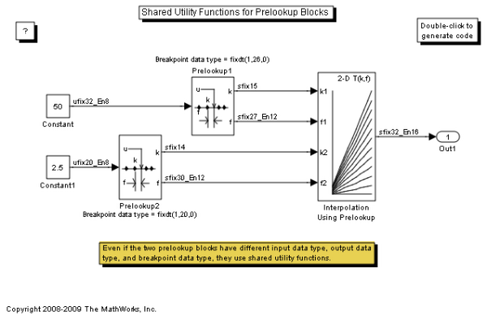

Shared Utility Functions for Prelookup Blocks
The utility functions generated by the Prelookup block are determined by the target data type of the block's inputs, outputs, and breakpoint parameter, as well as the Index search method and Integer rounding mode. Even if the two Prelookup blocks in this model have different data types, they fullfill the above requirements and share their utility functions.
To see this in the generated code, open the model and build it.
